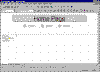

| ||||
Now that the layout of the Personal Web is in place, you will add content to each of the pages. While page creation and file management tasks are best handled in the FrontPage Explorer, designing and editing pages is done in the FrontPage Editor.
The FrontPage Editor is used to create, edit, and view pages using a familiar WYSIWYG (What You See Is What You Get) interface similar to word-processing programs such as Microsoft Word. All text, styles, and page formatting is based on Hypertext Markup Language (HTML) standards.
The following exercises will introduce you to the FrontPage Editor's basic features. In Lesson 2, you will explore FrontPage Editor features in more depth.
Figure 1. The Navigation button
The home page opens in the FrontPage Editor.

Click image to enlargeFigure 2. The FrontPage Editor
Did you find this material useful? Gripes? Compliments? Suggestions for other articles? Write us!
© 1999 Microsoft Corporation. All rights reserved. Terms of use.